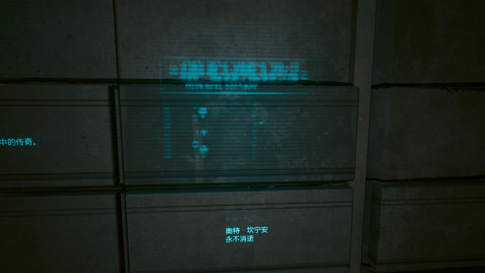
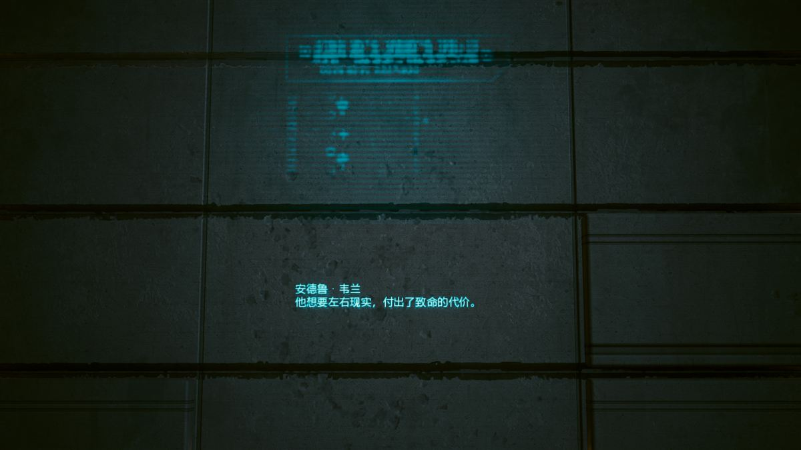

你的身体，是一份可以反复改写的配置单
第一人称、开放世界、动作角色扮演——三个词都很普通，但组合起来的方向很明确：它不要求你上手很快，而是要求你想清楚自己要变成什么。2023 年的 2.0 更新几乎把这套系统重做了一遍。
01五条属性，五种活法
属性决定你能装上什么义体、能通过什么对话选项、能用什么武器。它不是单纯的力量值，而是一份你打算怎么解决麻烦的声明。
| 属性 | 直接影响 | 你会在哪些场景需要它 |
|---|---|---|
| 肉体 Body |
生命值、耐力、近战伤害、负重与开门方式 | 徒手与钝器、破门、抓取敌人当盾牌；对话里那些“直接动手”的选项。 |
| 反应 Reflexes |
暴击率、闪避、突进与空中机动 | 刀剑与手枪、跑酷式位移、时间减速类义体（斯安威斯坦）。 |
| 技术能力 Technical Ability |
护甲、技术武器、拆解与制作 | 穿墙射击、开门与拆弹、升级武器到高阶；也是很多支线的“工程师解法”。 |
| 智力 Intelligence |
快速破解伤害、RAM 容量、上传速度 | 纯黑客流；隔着一堵墙让整层楼的敌人互相开火。 |
| 冷静 Cool |
潜行、暴击、商店价格与部分对话 | 消音武器、光学隐身、绕后击杀；也是遇到麻烦时最省事的一类选项。 |
2.0 之后技能被合并为五项：猎头、黑客、忍者、独狼、工程。它们不再受属性等级限制，每五级解锁一档被动，最高 60 级。
02专长树：2.0 之后更少，但更狠
1.6 时代的专长树问题很直接：点数多、节点碎、大部分是几个百分点的加成，加完之后你感觉不到自己变强了。2.0 把整棵树砍短，让每个节点都指向一种具体行为。
更关键的是“属性门槛解锁特殊能力”的设计：把某条属性堆到足够高，会解锁一个改变打法形态的技能，而不只是数值提升。
- 脑机超频智力线。RAM 见底时用生命值继续上传破解——黑客流从此有了“透支”的选项。
- 爆能射击技术线。技术武器蓄力后打出穿透与爆炸，把拆墙工具变成主武器。
- 方刚气血肉体线。把生命值上限转换成近战压制力，越打越硬。
为什么这次重做值得单独说
因为它改变了游戏对自己的定义。旧版本里你是在“堆数值”，新版本里你是在“选一种身份”：是靠义体硬扛的莽夫，还是靠代码让别人自相黑手的幽灵。这两者不再只是伤害数字的差别。
代价是：2.0 之前的存档会返还全部专长点，且提供一次属性重置——官方也建议直接开新档。
03义体：变强，然后付账
义体是这套玩法的核心，也是这个世界观的核心。2.0 把护甲的主要来源从衣服改到了义体，于是“变强”这件事第一次和“改身体”绑死在了一起。
每个义体都要占义体容量。容量有上限，靠属性、专长和成长芯片往上加。所以配装不是“把最好的都装上”，而是决定你愿意放弃哪一半能力。
安装要去义体医生那里，坐在手术椅上，看你选的部件被真正装进去。这个动画看似只是沉浸感，实际在提醒你：这不是换装备，这是动手术。
设定里的代价叫赛博精神病——义体过量导致的人格崩解。游戏用“容量上限”做了机制上的呼应，用一连串支线做了叙事上的呼应：那些疯掉的人，多半是先被这座城市弄坏了别的地方。
义体槽位一览
- 额叶破解与操控相关
- 操作系统斯安威斯坦 / 赛博终端，决定你偏物理还是偏网络
- 骨骼 / 表皮护甲与抗性
- 手臂螳螂刀、猩猩臂、单分子线等武器化改造
- 腿二段跳、空中冲刺
- 神经系统时间减速、闪避与反应加成


04枪、刀、车：三种打架方式
武器三型
力量型 可跳弹、可装配件最全；技术型 蓄力后穿透墙体与掩体；智能型 子弹自动追踪目标，但伤害被压得更低，需要专长补回来。
近战与刀剑
2.0 加大了近战的比重：耐力不再被跑动消耗，只被攻击消耗；加入了新的处决动作与热能武士刀。螳螂刀配上时间减速，是整部游戏最顺手的暴力。
载具战斗
2.0 新增：驾驶中可以用手枪、冲锋枪射击，部分车自带车载武器，摩托车可以近身劈砍。轮胎能被打爆。2.3 又补了 AutoDrive，让车自己把你送到目的地。
05两套“不用开枪”的系统
快速破解
隔着墙、隔着楼层，用 RAM 让敌人的义体过热、失明、短路，或者直接让他的枪炸膛。2.0 之后可以对同一个目标叠加多个破解，也可以对 NCPD 警员动手——后果自负。
最典型的用法不是击杀，而是让敌人互相解决：先用“传染”（contagion）类破解让一个人咳嗽，再让旁边的人把他当成威胁。
超梦
一段被录下来的感官体验，可以像剪辑素材一样拆开看。你在三个层里来回切换：画面、声音、热信号。很多任务的核心不是战斗，而是“在一段别人的记忆里找到他没说出口的东西”。
它同时是这个世界的隐喻：当体验可以被录制、复制、售卖，真实就成了一种需要额外付费的东西。
06四种流派，四条开局
下面不是“最优解”，而是四种能成立的身份。每一种都有自己的短板，选一种就意味着放弃另一种的便利。
| 流派 | 主属性 | 核心义体 | 玩法要点 |
|---|---|---|---|
| 枪械 | 肉体 / 反应 | 骨骼强化、斯安威斯坦、皮下护甲 | 正面压制，靠时间减速抢节奏。适合第一次玩、不想研究系统的人。 |
| 黑客 | 智力 | 赛博终端、强化额叶、脑机超频 | 不开一枪清完一整层。前期最弱，中后期最强，也是最像“这个世界的人”的打法。 |
| 近战 | 肉体 / 反应 | 螳螂刀、肌腱强化、方刚气血 | 贴脸、处决、位移。对手柄和节奏感有要求，但观感最好。 |
| 潜行 | 冷静 / 技术 | 光学隐身、消音武器、二段跳 | 不触发警报完成任务，报酬更高。失败一次就得重来，耐心比手速重要。 |